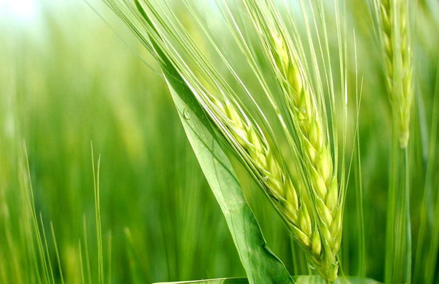
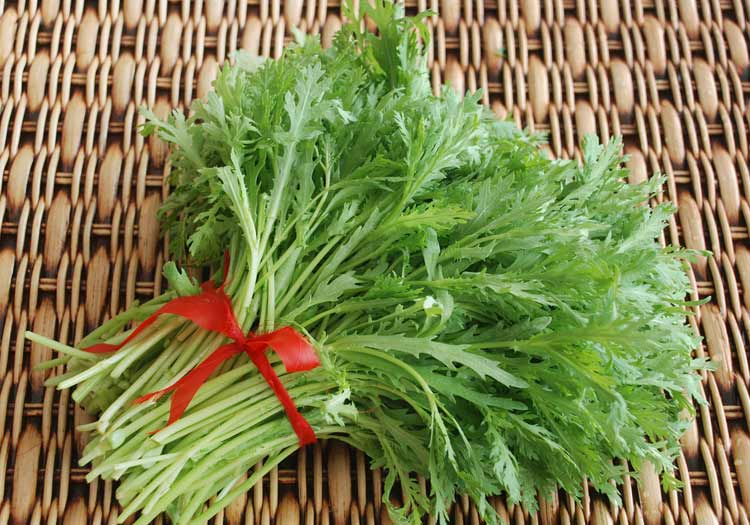

小满是温润适当的，不完全盈满，留下一个“刚刚好”的空间。这个空间恰恰成就了一个小的满足，不张扬更不招摇。小满之“满”，有个“小”字来修饰与铺垫，也代表着不苛求圆满的心境。从小满不满里体会这种心境，遍能察得人生的智慧。
每年5月20日到22日之间，太阳到达黄经60°时为小满。小满同惊蛰、清明一样，是反映生物受气候变化的影响而出现生长发育现象的节令。此时植物比较茂盛、丰满，树叶开始随着风发出簌簌的声音了。夏熟作物的籽粒开始灌浆饱满，但尚未成熟，只是小满，还未大满。
小满一词在南方地区被赋予了新的含义，“满”用来形容雨水的盈缺，指出小满时田里如果蓄不满水，就可能造成田坎干裂，甚至芒种时也无法栽插水稻。所谓，“小满不满，芒种不管”。
小满三候：一候苦菜秀，二候靡草死，三候小暑至。“春风吹，苦菜长，荒滩野地是粮仓”，刚刚进入小满的时候，苦菜开始成熟。苦菜是中国人最早食用的野菜之一，据说当年王宝钏为了活命曾在寒窑吃了18年苦菜。旧社会农民每年春天青黄不接之时，要靠苦苦菜充饥。
苦菜遍布全国，医学上叫它败酱草，宁夏叫苦苦菜，山西人叫苦麻菜。苦菜新鲜爽口、清凉嫩香、营养丰富，含有人体所需要的多种维生素、矿物质、胆碱、糖类、核黄素和甘露醇等，具有清热、凉血和解毒的功能。是小满节气非常受欢迎的一种食物。
祭车神是一些农村地区古老的小满习俗。在相关的传说里二车神，是一条白龙在小满时节，人们在水车蓦上放上鱼肉、香烛等物品祭拜，最有趣的地方是，在祭品中会有一杯白水，祭拜时将白水泼人田中，有祝福水砚涌旺的意思。
相传小满为蚕神诞辰，因此江浙一带在小满节气期间有一个祈蚕节。我国农耕文化以“男耕女织”为典型。女织的原料北方以棉花为主，南方以蚕理为主。蚕丝需靠养蚕结茧抽丝而得，所以我国南方农村养蚕极为兴盛，尤其是江浙一带。
1、小满是人体生理活动最旺盛的时期，应及时适当补充，才能使身体五脏六腑不受损伤；
2、小满之后天气变热，注意防晒！